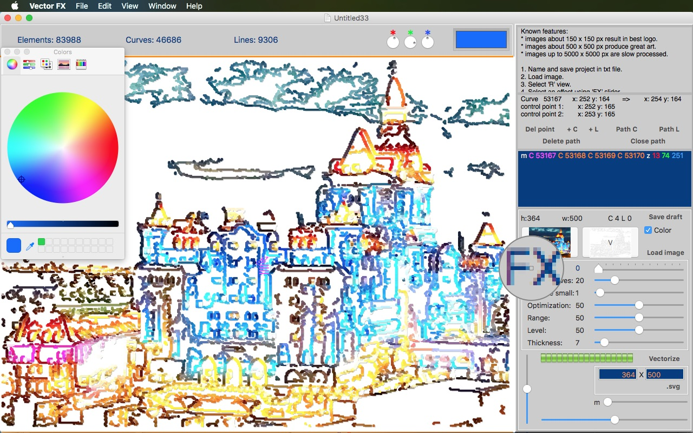
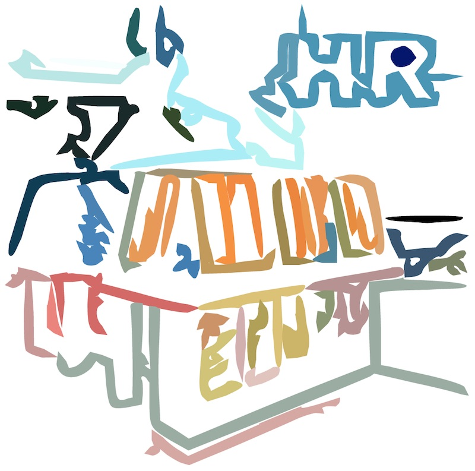
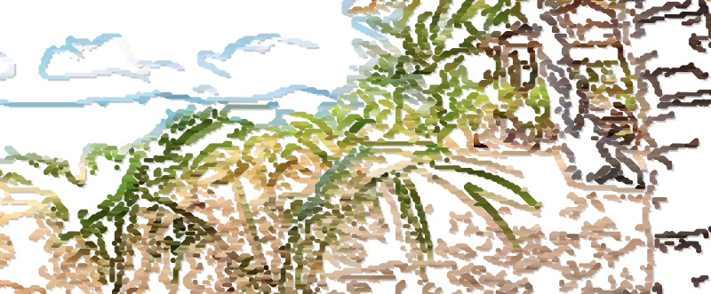
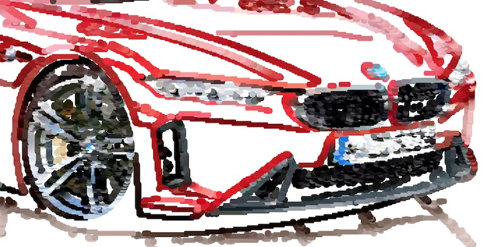
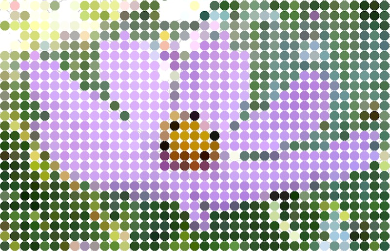

Vector FX converts images & scans to color vector art with automated FX. You can edit it & save .svg.
Сonvert small logos and icons into color vector as a professional designer.
Known features:
Images about 150 x 150 px result in best logo.
Images about 500 x 500 px produce great art.
Images up to 5000 x 5000 px are processed slowly.
1. Name and save project in .txt file.
2. Load image.
3. Select R view.
4. Select an effect using FX slider.
5. Adjust parameters such as Lines..Curves, Remove small, etc.
6. Click Vectorize.
7. Now you can select V view to look at the result vector.

8. Select points by clicking on them on the image.
9. You can drag them and edit paths (lines and curves) by clicking: Del point, +C, +L, Delete
path.
10. Color of the path can be changed using color selector at the top of the window.
11. You can also add new points and paths using Path C, Path L and Close path buttons.
12. When you want to save your artwork, select or deselect Color to save either with color or black and white.
13. Edit size of the result image by typing it in the fields above .svg button if needed.
14. Click .svg to save file in .svg format.


